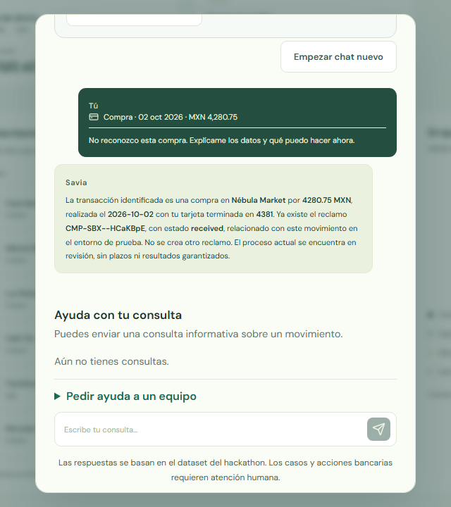
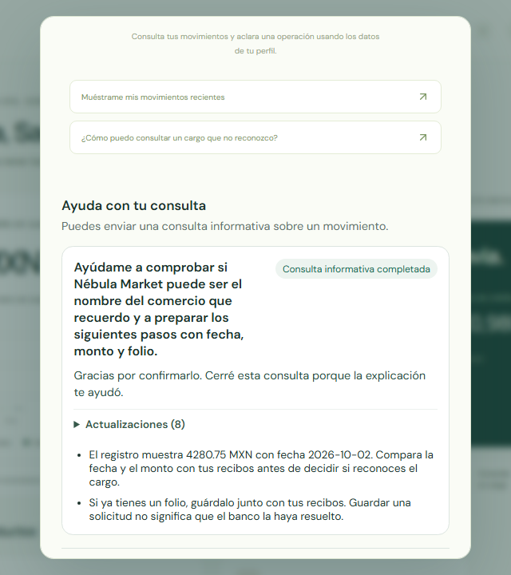
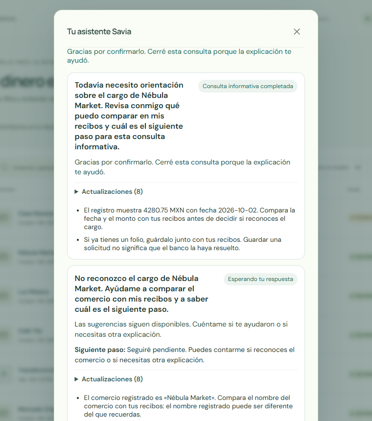

Useful in 9.338 s
Grounded to the selected MXN 4,280.75 charge and existing claim.
You shouldn’t have to repeat your story or chase updates. Savia keeps your place.
You shouldn’t have to repeat your story or chase updates. Savia keeps your place.

Savia explained the selected charge and existing claim in a useful Spanish answer.

The actual Spanish model answer explained the selected charge and its existing simulated claim.
Grounded to the selected MXN 4,280.75 charge and existing claim.
No duplicate claim was created.
Standalone stdio run, separate from this browser answer.
Confirm that it helped, begin a new chat, and return to the saved perspectives.

The customer marked the informational result helpful; both suggestions remained after a new chat and reload.
The customer explicitly closed the informational inquiry.
They remained after a new chat and reload.
The team did not create a new claim.
A calm moment, then a spoken confirmation when your explanation helps.

“Despacio, sí, bien tranquilo, aquí estoy.”
“Cerró la consulta, ya te ayudó la explicación.”
Informational closure only; no bank decision or refund.
Partner with a bank to test the customer-support journey and its handoffs.
Voice or text
Keeps context
Two perspectives
May fail safely
30 min · up to 7 days
Gloria Yanta Salc · prompt flow | Carlos Diaz · data pipeline | Savia team · integration